How to upload a dataset in HIVE and run queries against it in Google Cloud Platform.
Dataset: movies_few.csv (See Assignment 4 or D2L for the location of the folder with this and other files.)
- Create a new project for this codelab.
- Enable the Cloud Dataproc API (if not enabled already). You can enable it by navigating to Main Menu → APIs & Services. Click on "Enable APIs & Services. Search for "Dataproc". Click on "Cloud Dataproc API" and enable the API.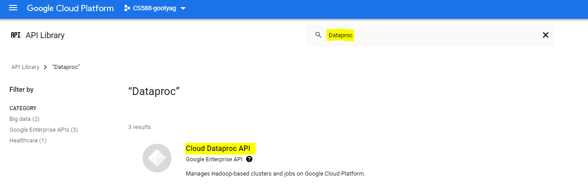
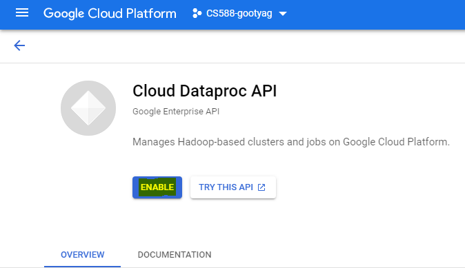
- At the end of the codelab you can delete the project to ensure all attached resources are also freed and you are not charged for them unknowingly.
- Log onto console.cloud.google.com
- Click on Products and Services icon on the top left corner of the page
- Scroll down and choose Cloud Storage -> Browser from the list
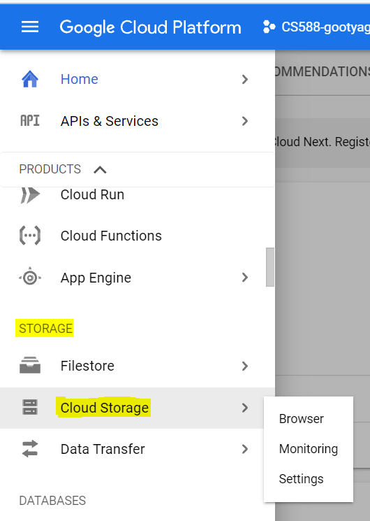
- Create a storage bucket in the google cloud storage for uploading the input dataset.
- Name of the bucket - cs588-a4-demo (Bucket name must be unique)
- Location Type - Region
- Location - us-west1(Oregon)
- Access Control - Fine-grained
- Leave the rest of the fields as default
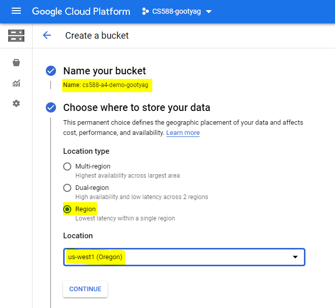
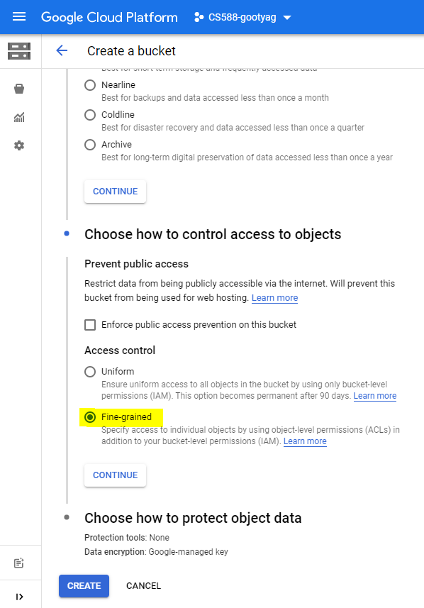
- Create a folder called
datain your bucket to upload your input dataset.
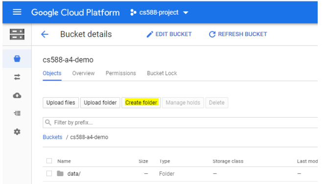
- Double click on the folder to go inside it and upload your dataset to this folder

Create a cluster with one master and three worker nodes in Dataproc.
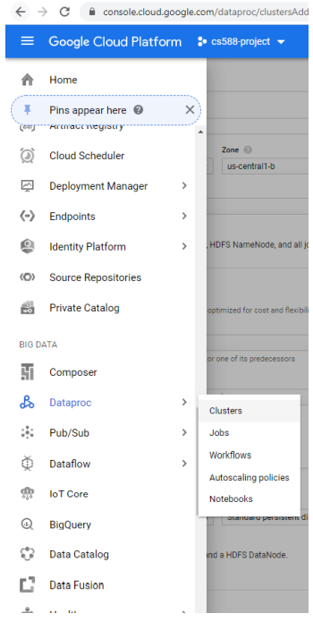
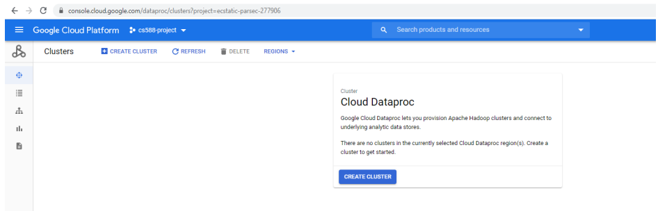
In Set up Cluster section, fill the following information
- Cluster Name - cs588-a4-cluster
- Location - us-west1
- Zone - us-west1-b
- Cluster type - Standard (1 master, N workers
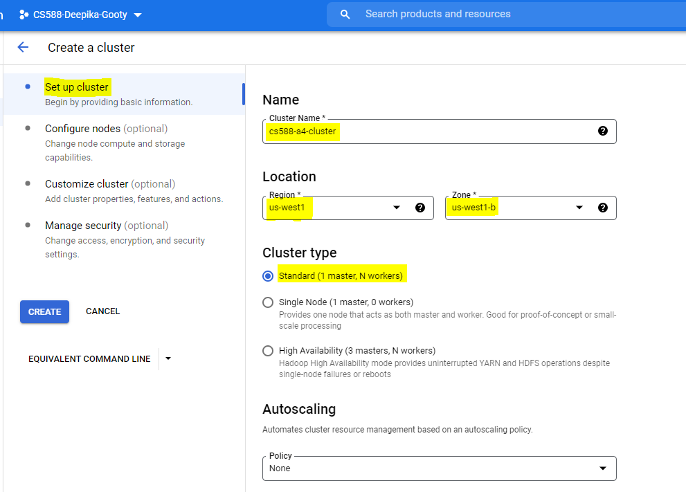
In Configure Nodes section,
- Scroll down to the Worker nodes
- Change the number of worker nodes to 3
- Leave the other fields as default
- Click on Create
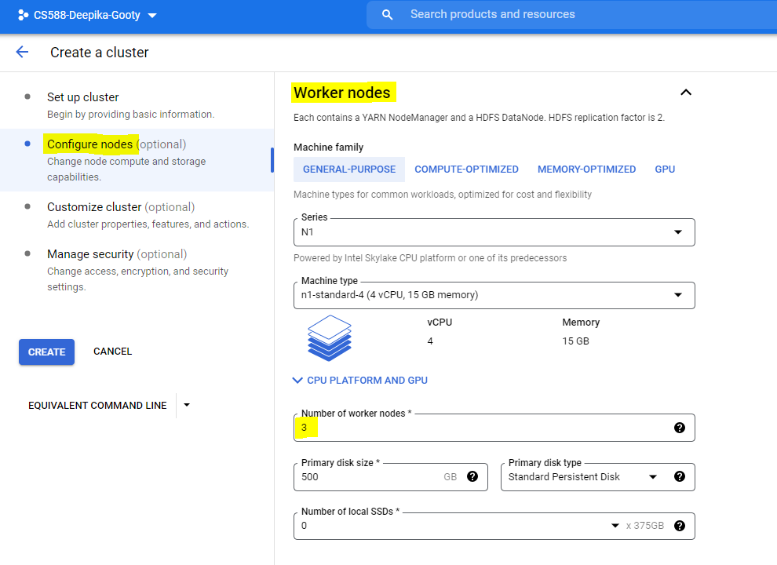
- SSH into the master node of the cluster by clicking on the cluster and then going to the VM Instances tab.
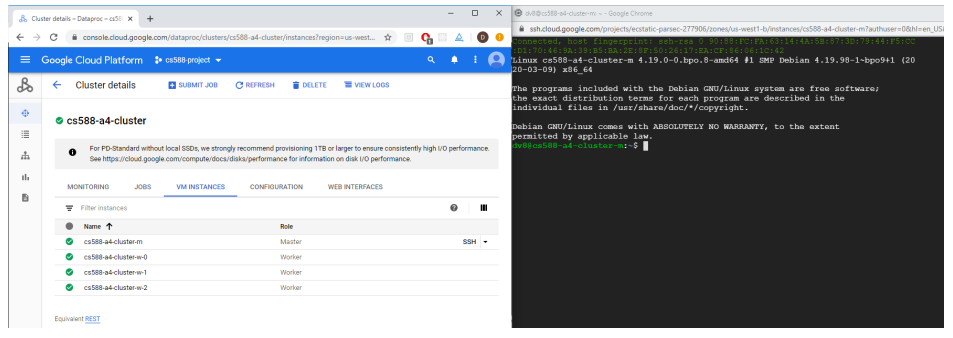
- We can view the input dataset in cloud storage using the following command
Note - Make sure to replace the below bucket name (cs588-a4-demo) with your bucket name that you have created.
gsutil ls gs://cs588-a4-demo/data/
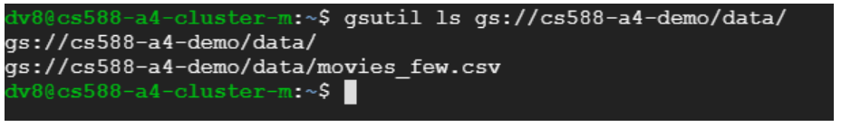
- Run the Beeline shell using the JDBC HIVE interface. Hive runs on localhost at port 10000. We use the Google Cloud user name at the Master Node host name in the command. The command is shown below
Note: Here myusername is basically your ODIN username since you are logged in to GCP with your pdx.edu email account. Replace the clustername with the name of the cluster that you have created. ([clustername]-m is always the name of the master VM in a cluster.
beeline -u jdbc:hive2://localhost:10000/default
-n [myusername@clustername-m]
-d org.apache.hive.jdbc.HiveDriverAn example of the usage is given below
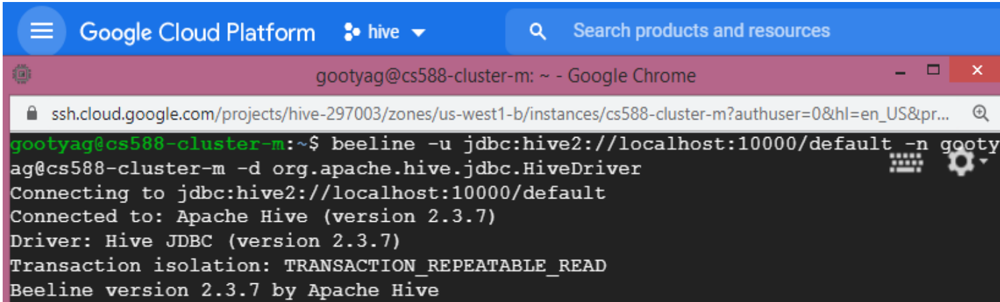
At this point, you are interacting with the HIVE terminal and can issue HIVE commands.
- We create a table in HIVE to store the input dataset using the following syntax
CREATE EXTERNAL TABLE movies
(film VARCHAR(100),
genre ARRAY<VARCHAR(100)>,
lead_studio VARCHAR(100),
audience_score_percent BIGINT,
profitability_percent BIGINT,
rotten_tomatoes_percent BIGINT,
world_wide_gross map<string,float>,
year BIGINT)
ROW FORMAT DELIMITED
FIELDS TERMINATED BY ','
COLLECTION ITEMS TERMINATED BY '|'
MAP KEYS TERMINATED BY ':'
LOCATION 'gs://cs588-a4-demo/data/';- The EXTERNAL clause in the CREATE TABLE command will leave the source data file in the Cloud File Storage (CFS). Using this approach, the original data stays where it is (gs: bucket in this example) but the newly created table can be manipulated.
- On the flip side, you could use CREATE TABLE, without the EXTERNAL clause to move the data from the CFS (gs: in this case) into the HIVE file system as a table. Once the data is moved into the HIVE table, the file is removed from the regular CFS.
- The LOCATION clause in the CREATE TABLE statement must point to the bucket and folder containing the data.
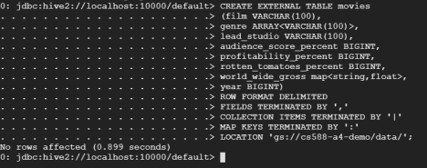
Note - It might take a while for the queries to execute, as they have to be dispatched to the cluster.
- Select 10 rows from the table
0: jdbc:hive2://localhost:10000/default> SELECT * FROM movies LIMIT 10; 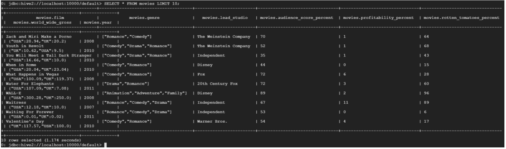
- Count the number of rows in the table
0:jdbc:hive2://localhost:10000/default> SELECT COUNT(*) FROM movies;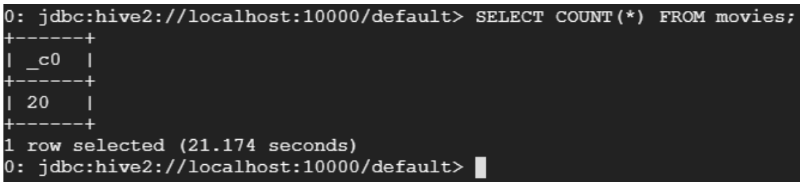
- Select films where the rotten tomatoes percentage > 80
0: jdbc:hive2://localhost:10000/default> SELECT film, genre FROM movies where rotten_tomatoes_percent > 80;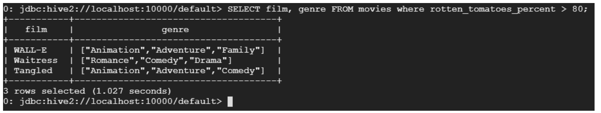
- Select films whose gross is greater than 200
SELECT film, country, gross
FROM movies
LATERAL VIEW EXPLODE(world_wide_gross) gross_table AS
country, gross
WHERE gross > 200; 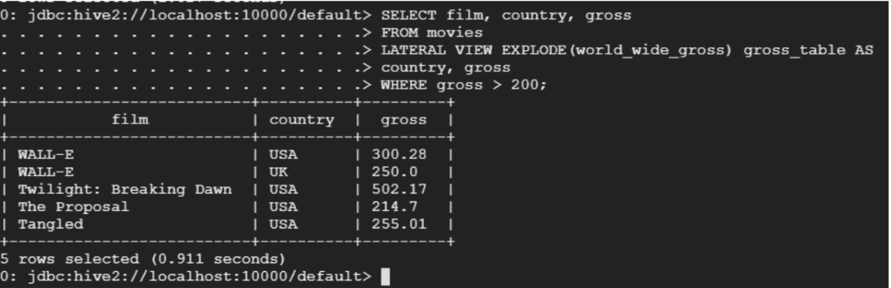
- Select the film with the highest gross in each country
SELECT A.film as film, A.country as country, B.max_gross as gross FROM
(SELECT film, country, gross
FROM movies
LATERAL VIEW EXPLODE(world_wide_gross) gross_table1 AS
country, gross) A
INNER JOIN
(SELECT max(gross) as max_gross
FROM movies
LATERAL VIEW EXPLODE(world_wide_gross) gross_table AS
country, gross
GROUP BY country) B
ON A.gross = B.max_gross; 
NOTE: You might need to write ‘as A' and ‘as B' instead of only ‘A' and ‘B' when providing alias in the subquery
- Return all the films in the ‘Adventure' and ‘Drama' genre
SELECT genre_item, collect_set(film) as film_list
FROM movies
LATERAL VIEW EXPLODE(genre) genre_table as genre_item
WHERE genre_item in ('Adventure', 'Drama')
GROUP BY genre_item; 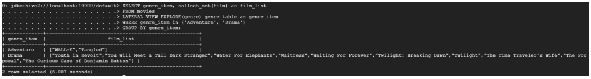
- To exit the HIVE terminal, enter !q
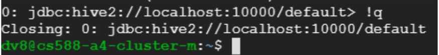
As always, do not forget to delete the cluster, the bucket and the project when you complete the assignment.
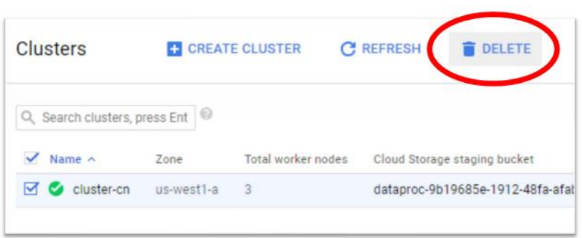